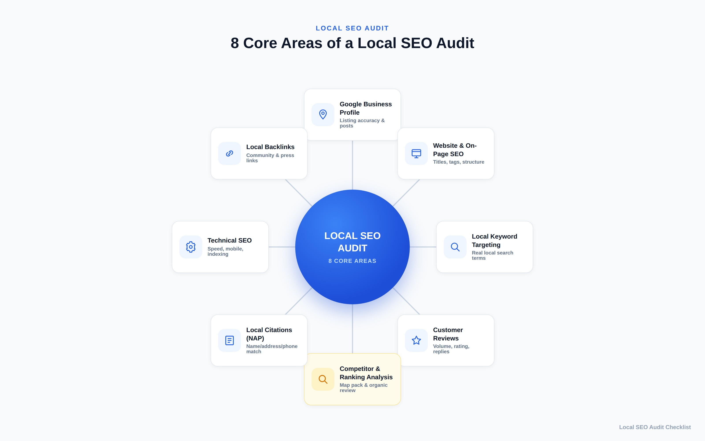
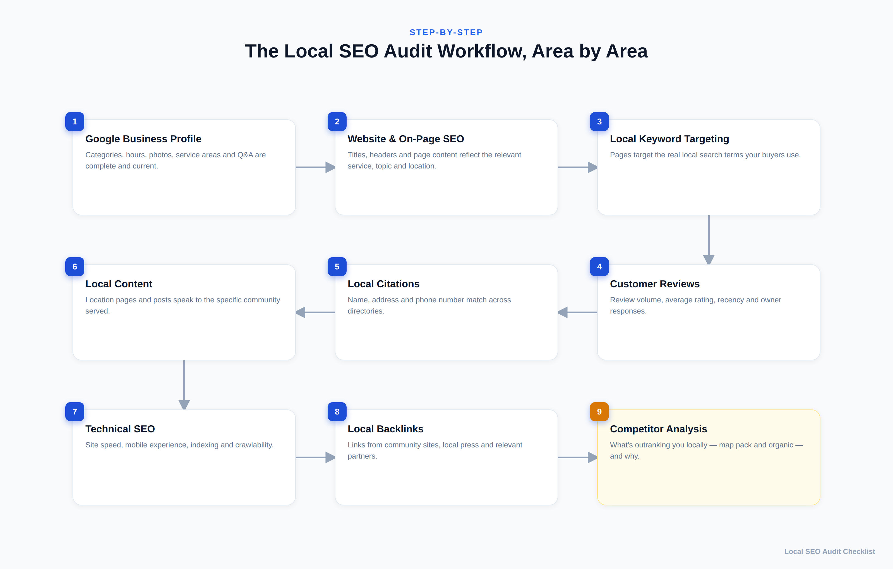
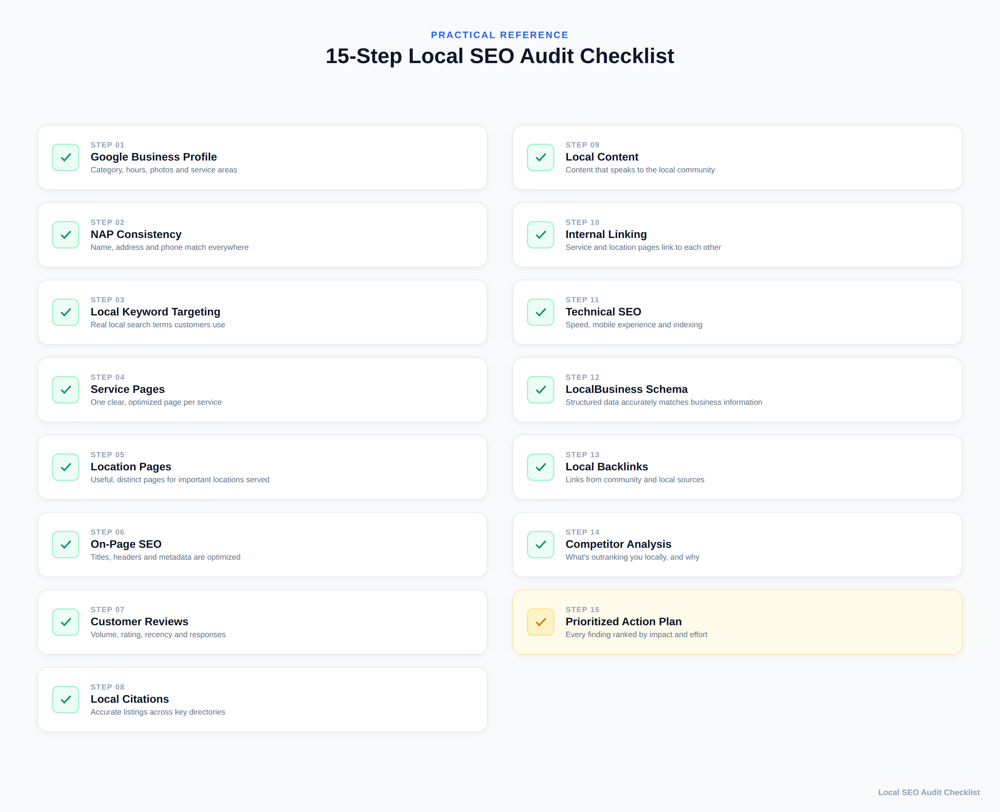
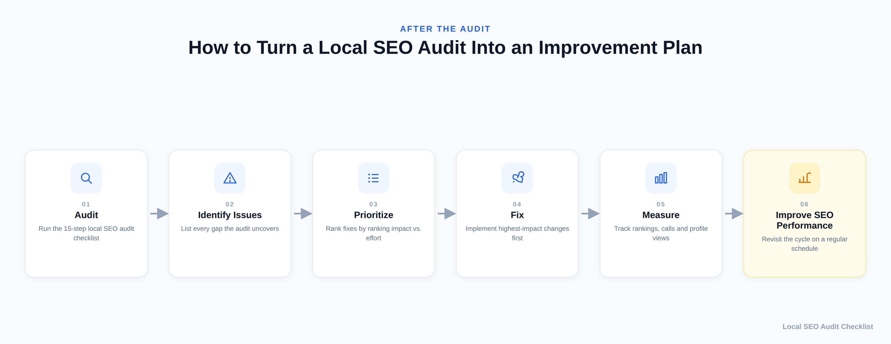

Local SEO Audit Checklist: 15 Steps to Improve Your Google Rankings
If you run a business that depends on customers finding you nearby — a clinic, a boutique, a service business, a local retailer — showing up when someone searches "[what you do] near me" is one of the highest-value things your website can do. A local SEO audit is how you find out exactly where that's breaking down, before you spend another dollar on ads or content.
This checklist walks through the same 15 areas we check whenever we audit a local business's online presence. Work through them in order, use the scorecard at the end to track what needs fixing, and you'll have a clear, prioritized action plan instead of a vague sense that "SEO isn't working."

What Is a Local SEO Audit?
A local SEO audit is a structured review of everything that determines whether your business shows up in local search results — the Google Map Pack, local organic results, and "near me" searches — and why it might not be showing up yet.
It's a more specific relative of a general SEO audit. If you haven't read our breakdown of what an SEO audit covers, that's a good primer on the broader discipline: crawlability, site health, content quality, and backlinks. A local SEO audit takes that same investigative approach but narrows in on the signals that matter specifically for location-based search: your Google Business Profile, the accuracy of your business information across the web, how well your site is built around the areas and services you actually serve, and the reviews and local links that build trust with both customers and Google.
In short: a general SEO audit asks "is this website healthy?" A local SEO audit asks "does Google — and do the people searching nearby — actually know this business exists, is legitimate, and is relevant to them?"

How to Do a Local SEO Audit
The 15 checks below tell you what to review. The process around them is what turns a checklist into an audit you can act on:
- Prepare. Get access to the Google Business Profile and Google Search Console, write down the business's exact name, address, and phone number, and choose a small set of target searches, usually your main services combined with the towns or neighborhoods you serve.
- Audit. Work through the 15 areas in order. The early checks, such as your profile and business details, affect how you interpret the later ones.
- Collect evidence. For each check, save what you actually saw, such as a screenshot, a URL, and the date, rather than relying on memory.
- Identify issues. Mark each area as pass, needs work, or fail in the scorecard.
- Assign priority. Decide what to fix first using the tiers in Step 15.
- Implement fixes. Work through the highest-priority items, and note who is responsible for each one.
- Re-check. Confirm each fix is actually live, for example that a directory listing now shows the correct phone number.
- Monitor. Revisit your target searches, reviews, and Search Console data over the following months.
A note on checking search results: local results change with the searcher's location, and Google says its local ranking considers distance alongside relevance and prominence. Check from within the area you serve, and treat what you see as a dated snapshot rather than a fixed ranking.
Local SEO Audit Checklist: 15 Essential Steps
1. Google Business Profile
Your Google Business Profile (GBP) is one of the most important elements to review in a local SEO audit, because it's what actually appears in the Map Pack. Check that your primary and secondary categories accurately describe what you do, your business hours are current (including holiday hours), your service areas are set correctly if you don't have a walk-in location, and you have a steady flow of recent photos rather than a handful uploaded once at setup. Check whether you're using GBP posts and the Q&A section where it's available, and whether questions from customers are actually being answered. A profile that was set up once and never touched again is a common, fixable gap.
How to check: Open the profile from your Business Profile dashboard, then look at it the way a customer would by searching the business name in Google Search and Maps. Work through each field:
- Business name: matches the real-world name on your signage and website. Google's guidelines don't allow added keywords or locations in the name.
- Primary category: the most specific category for what the business is. Additional categories should cover other core services only; Google recommends using as few as possible.
- Address or service area: a storefront address customers can visit or, for businesses that travel to customers, a service area with the address hidden.
- Hours: regular hours match reality, and special hours are set for upcoming holidays.
- Description, services, and products: filled in where your category offers them, accurate, and consistent with the website.
- Photos: show the actual premises, team, or work, and include recent uploads.
- Customer questions: if your profile shows a questions section, look for unanswered or outdated answers.
Record a screenshot of the profile and a list of missing or inaccurate fields. Pass means every relevant field is complete and accurate. Needs work means minor gaps, such as missing special hours or old photos. Fail means the profile is unclaimed or unverified, uses the wrong primary category, or shows wrong contact details. Google says local results are based mainly on relevance, distance, and prominence, and that complete, accurate information helps it match your profile to searches. No single field guarantees a better position, and there is no way to pay for one.
2. Business Name, Address, and Phone Consistency (NAP)
Search this exact combination of your business name, address, and phone number across your website, GBP, and the major directories you're listed on (Yelp, Bing Places, Facebook, industry-specific directories). Even small inconsistencies — a suite number dropped, "St." vs. "Street," an old phone number still live on one directory — make your business look less consistent and less trustworthy to both customers and the platforms trying to verify who you are. It's tedious to check manually, but it's one of the more straightforward items on this list to fix, because it's binary: either your information matches everywhere, or it doesn't.
How to check: Write down your correct NAP exactly as it should appear, then compare it field by field against your website footer and contact page, your Google Business Profile, and each directory listing you find. Searching your phone number, and your business name in quotes, helps surface old listings you've forgotten about. Record each source, the name, address, and phone it shows, and whether it matches. Wrong phone numbers and old addresses are the most urgent to correct; formatting differences such as "St." versus "Street" are worth tidying but less urgent.
3. Local Keyword Targeting
Local keyword targeting is keyword research narrowed to how nearby customers actually search. Look at the actual pages on your site and ask whether they target real search terms your customers use — the "[service] + [city/neighborhood]" pattern, plus how people actually phrase the problem you solve ("emergency plumber," not just "plumbing services"). A common finding here is a site that's technically about the right topics but never uses the specific language and locations customers search for, so it never matches the query.
How to check: List the service-and-location searches that matter most to the business, then identify which page on your site is meant to answer each one. Record the search, the intended page, and whether that page's title, H1, and content naturally use that service and location. A search with no matching page, or with several pages competing for it, needs work.
4. Service Pages
Each core service should have its own dedicated page rather than being buried in a single "Services" page or, worse, only mentioned on the homepage. A dedicated page lets you go deep on that one service, target the specific keywords around it, and give Google (and customers) a clear, relevant page to send people to instead of a generic overview.
How to check: Compare the list of services you actually offer with the pages on your site. Pass means each core service has a dedicated page explaining what it involves, who it's for, and how to book or request a quote. Needs work means a page exists but is only a few thin sentences. Fail means an important service has no page at all.
5. Location Pages
If you serve more than one city, neighborhood, or region, a dedicated page for a given location is worth creating only when you can fill it with genuinely useful, distinct information for that specific area — which services you offer there, real location-specific details, or local context that actually helps someone from that area. A page that's just your standard template with the city name swapped in (a "doorway" page) isn't useful to anyone. Thin, duplicated location pages are one of the more common local SEO mistakes, and they can do more harm than having no location pages at all. If you can't say something genuinely different about a location yet, it doesn't need its own page.
How to check: For each existing or planned location page, ask what a reader in that area would learn that they couldn't get from any other page on the site, and sort the page into one of these groups:
- Genuinely useful: specific details for that area, such as a branch's address and directions, which services are available there, local staff, or projects completed nearby.
- Useful service-and-location pages: a page such as "boiler repair in [town]" is justified only when the service genuinely operates there and the page has specific information to offer.
- Thin city-name swaps: near-identical pages where only the place name changes.
- Doorway-like pages: sets of pages created mainly to rank for similar city searches and funnel visitors to one destination. Google's spam policies name this pattern specifically.
Record each location page and its group. Thin or doorway-like pages should be improved with real local detail, merged, or removed, not multiplied.
6. On-Page SEO
Check title tags, H1s, meta descriptions, and body content on your key pages for basic optimization: does the title tag reflect the service and location, is there one clear H1, is the content long enough to actually be useful, and is it structured with headers rather than one dense block of text. This is standard on-page SEO hygiene, but it's foundational — the other 14 items on this list matter less if the pages themselves aren't built correctly.
How to check: View the title tag and meta description of each key service and location page; a free site crawler can list them for the whole site at once. Record missing, duplicated, or generic titles, pages with no H1 or several competing H1s, and pages whose content never mentions the area served.
7. Customer Reviews
Look at review volume, average rating, how recent your reviews are, and — importantly — whether you're responding to them, positive and negative alike. A business with 40 reviews from three years ago sends a different signal than one with a steady trickle of recent reviews and visible owner responses. Note which review platforms matter most in your industry (Google is usually primary, but industry-specific platforms often matter too).
How to check: On your Business Profile, and on any industry platform that matters in your sector, note the total number of reviews, the average rating, the date of the most recent review, roughly how many arrived in the last few months, and what share have an owner response. Read recent negative reviews for recurring themes, since they often point to real service issues. Needs work usually means reviews have stalled or responses are missing. The fix is a consistent, honest process for asking every customer for feedback and replying to reviews, positive and negative. Don't offer discounts or rewards for reviews, and don't ask only customers you expect to be happy; Google's review policies prohibit both.
8. Local Citations
Citations are mentions of your business — usually your NAP data — on other websites: directories, chambers of commerce, industry associations, local news mentions. Audit which major citation sources you're on, whether the information matches (see #2), and where there are obvious gaps compared to what's realistic for your industry and area.
How to check: Start with the platforms that matter for your type of business: general ones such as Bing Places, Apple Business Connect, and Facebook, plus the main directories and associations in your industry and area. For each, compare the business name, address, phone number, website URL, hours, and category with your correct NAP. Record the platform, whether a listing exists, and any mismatches. Correcting inaccurate listings on platforms customers actually use comes before creating new ones. There is no fixed number of citations a business needs, and listing on every directory you can find is not the goal.
9. Local Content
Beyond your service and location pages, does your site have any content that speaks specifically to the community you serve — local guides, event participation, community involvement, locally-relevant FAQs? This is the kind of content that reflects genuine local relevance — not a generic template with a city name inserted into it.
How to check: Review your blog and resource pages and note which are genuinely tied to the area you serve. Content that answers questions local customers actually ask, such as local permit rules, seasonal problems in your climate, or projects in nearby neighborhoods, counts. Generic articles with a city name added don't.
10. Internal Linking
Check whether your service pages, location pages, and blog content link to each other in a sensible way. A visitor (and a search engine crawler) landing on one service page should be able to find related services and relevant locations without hunting through the main navigation. Isolated pages with no internal links pointing to them are much harder for both users and Google to find valuable.
How to check: A free site crawler can show how many internal links point to each page. Record service and location pages with few or no internal links, then add links from related services, relevant blog posts, and the navigation where it genuinely helps visitors.
11. Technical SEO
Confirm the basics: the site loads reasonably quickly, it works properly on mobile devices, important pages are actually indexed in Google Search Console, and there's nothing accidentally blocking search engines from crawling key pages. This overlaps with a general technical SEO audit, but it's worth re-checking specifically on your service and location pages, since those are often added later and can be missed by earlier technical work.
How to check: In Google Search Console, use URL Inspection on each important service and location page to confirm it's indexed, and review the Core Web Vitals report. Open the pages on a phone and test click-to-call links and contact forms. A key page that isn't indexed is a fail and a top-priority fix.
12. LocalBusiness Structured Data
Check whether your site has LocalBusiness schema markup implemented, and whether the information in that markup — name, address, phone, hours, service area — actually matches what's live on the page and on your Google Business Profile. Structured data doesn't guarantee a ranking boost or a rich result in Google — Google decides independently whether and how to use it — but accurate markup helps Google understand your business information correctly, and may make certain search features possible. Make sure the business type is correct, the markup matches your visible page content, and you validate it before publishing; outdated, missing, or mismatched structured data is a quiet, easy-to-overlook gap.
How to check: Test each relevant page with Google's Rich Results Test or the Schema Markup Validator, then compare the name, address, phone, and hours in the markup with the visible page and your Business Profile. Record errors, warnings, and mismatches. Only mark up information that is true and visible on the page; never add ratings or details that don't exist.
13. Local Backlinks
Look at where your backlinks are coming from. This is part of the broader off-page SEO and backlinks picture, but for local SEO specifically, links from local, relevant, and legitimate sources are the ones worth looking for: local news coverage, chamber of commerce or business association listings, sponsorships, partnerships with other local businesses, and guest content on locally-relevant publications. What matters here is quality and relevance, not raw link count. Link schemes, paid placements aimed at manipulating rankings, and mass guest-post campaigns aren't part of a sustainable local SEO strategy. A backlink profile made up entirely of generic, non-local links is a common, and fixable, gap for small businesses.
How to check: The Links report in Google Search Console lists the sites linking to you, and a backlink tool can add detail. Record which referring sites are local or relevant to your industry, and which look spammy or unrelated. Practical local opportunities usually come from real relationships: coverage in a local publication, a member listing with your chamber of commerce or business association, legitimate partnerships with suppliers or complementary businesses, sponsorship of local teams or events, and community organizations you already support. Each link should exist because the relationship is real, not because it was bought.
14. Local Competitor Analysis
Search your core "[service] + [city]" terms yourself and look at who's actually showing up in both the Map Pack and the top local organic results. What do they have that you don't — more reviews, more complete profiles, location pages you haven't built, backlinks from sources you're not on? Reviewing this won't guarantee you'll outrank them, but it turns the previous 13 items into a concrete comparison instead of an abstract checklist.
How to check: Use the same target searches you chose for Step 3. Search each one from within your service area and note which businesses appear in the map results and the top organic results. Pick two or three competitors that appear repeatedly, then compare them with your own business using a framework like this:
| Factor | What to compare | Where to look |
|---|---|---|
| Search visibility | Which of your target searches each business appears for, in the map results and organic results | Google Search and Maps, from within your area |
| Business Profile | Category choice, completeness of fields, photo freshness, and services listed | Each business's profile |
| Reviews | Number, recency, average rating, and whether the owner responds | Business Profile and relevant industry platforms |
| Service and location pages | Whether each core service and area served has a dedicated, useful page | Their website |
| Local content | Area-specific guides, project write-ups, or FAQs | Their blog and resource pages |
| Citations | Presence and accuracy on the main directories for your industry | Directory searches for their business name |
| Local links | Mentions from local publications, associations, or partners | A backlink tool, or a search for their name in quotes |
Record what each competitor has that you don't, and treat each difference as a candidate action for Step 15, not a guaranteed ranking fix.
15. Prioritized Local SEO Action Plan
Once you've worked through the first 14 areas, the last step is turning your findings into an ordered list: what is likely to have the most impact and is easy to fix (do this first), what's high-impact but will take longer (plan for it), and what's lower priority for now. An audit without this step is just a list of problems — this step is what actually moves the needle.
A practical way to order findings is to group them into tiers, judging each one by the evidence you recorded, how much it could affect customers or local visibility, how relevant it is to your core services, and how much effort it takes:
- Foundational problems: issues that can keep you from appearing or mislead customers, such as an unverified profile, a wrong phone number, or key pages that aren't indexed. Fix these first.
- High-impact structural and content problems: missing service pages, thin or duplicated location pages, and pages that don't target the searches you rely on.
- Trust and authority opportunities: review volume and responses, citation gaps on important platforms, and relevant local links.
- Lower-priority improvements: useful refinements such as extra photos, secondary directories, or minor on-page adjustments.
- Monitoring and re-check items: things to watch rather than fix now, such as competitor activity, review flow, and your visibility for target searches.
These tiers are a starting point, not a fixed ranking of factors. A finding can move up or down depending on what the evidence shows for your business.
Local SEO Audit Scorecard
Use this as a working tracker while you go through the checklist above. Rate each area honestly — the goal is an accurate starting point, not a perfect score. In the last column, note the evidence behind each rating and the next action it leads to.
| # | Audit Area | Status (Pass / Needs Work / Fail) | Priority (High / Medium / Low) | Evidence & Next Action |
|---|---|---|---|---|
| 1 | Google Business Profile | |||
| 2 | NAP Consistency | |||
| 3 | Local Keyword Targeting | |||
| 4 | Service Pages | |||
| 5 | Location Pages | |||
| 6 | On-Page SEO | |||
| 7 | Customer Reviews | |||
| 8 | Local Citations | |||
| 9 | Local Content | |||
| 10 | Internal Linking | |||
| 11 | Technical SEO | |||
| 12 | LocalBusiness Structured Data | |||
| 13 | Local Backlinks | |||
| 14 | Local Competitor Analysis | |||
| 15 | Prioritized Action Plan |
For findings that need more detail than a single cell, write each one up in a consistent format. The example below shows how.
Illustrative example — not a real business or audit.
| Field | Example entry |
|---|---|
| Finding | The phone number on one major directory listing doesn't match the website or the Business Profile. |
| Evidence | Screenshots of the directory listing and the website contact page, both taken on the audit date, with the listing URL recorded. |
| Status | Fail (Step 2, NAP consistency) |
| Priority | Foundational: customers using that listing could call a number that no longer works. |
| Recommended action | Claim or log in to the directory listing and update the phone number to match the website. |
| How to re-check | After the change is published, revisit the listing to confirm the new number displays, then search the old number in quotes to find any other listings still using it. |

How to Improve Local SEO After an Audit
Finding the gaps is only half the job. Once your scorecard is filled in, work through it in this order:
Fix the foundational issues first. NAP inconsistencies, an incomplete Google Business Profile, and missing or broken structured data are usually the fastest to fix and remove friction from everything else you do afterward.
Then build out what's structurally missing. Add the service or location pages that don't exist yet, and fix the thin or duplicated ones. This is more work than the foundational fixes, but it's what actually gives you pages capable of ranking for the terms you want.
Then work on trust signals. A steady cadence of new reviews (and responses to them), plus a handful of genuinely relevant local backlinks, build the credibility that can help a page that's close to appearing become more visible.
Re-run the competitor comparison periodically. What your competitors are doing changes. A quarterly check against the same "[service] + [city]" searches keeps your action plan current instead of static.

Local SEO for Small Businesses: Where to Start
If all 15 areas feel like a lot at once, and you're a small business without a dedicated marketing team, start with the three that tend to have the most disproportionate impact relative to the effort involved:
- Claim and fully complete your Google Business Profile if you haven't already — this alone is often the single biggest gap for small businesses that have never had SEO support.
- Fix your NAP consistency across your website and the two or three directories that matter most in your industry.
- Ask recent customers for reviews, and reply to the ones you already have.
Those three steps alone won't finish the audit, but they're realistic to do without outside help, and they typically surface (or resolve) the most obvious problems fastest — giving you a clearer sense of whether the remaining, more technical items are worth handling yourself or bringing in help for.
Conclusion
A local SEO audit isn't a one-time project — it's a diagnostic you'll want to revisit as your business, your competitors, and Google's local algorithm all keep changing. What matters most right now is having an honest, specific picture of where you stand across these 15 areas, rather than guessing. Work through the checklist, fill in the scorecard, fix the foundational issues first, and you'll be working from evidence instead of assumptions — which is the realistic, sustainable way to give your local visibility the best shot at improving over time.
Not sure where your business actually stands, or don't have the time to work through all 15 areas yourself? Get in touch and we'll walk through a local SEO audit together — no guesswork, no inflated promises, just a clear picture of what's working and what isn't.
Frequently Asked Questions
What is a local SEO audit?
A local SEO audit is a structured review of the factors that affect a business's visibility in local search, including its Google Business Profile, website, local keywords, reviews, citations, technical SEO, content, backlinks, and competitors.
Why is a local SEO audit important?
A local SEO audit helps identify gaps that may limit local visibility. It gives you a clearer picture of what is working, what needs attention, and which improvements should be prioritized first.
How do you do a local SEO audit?
Choose a small set of target searches, then review the 15 areas in this checklist in order, recording evidence for each. Mark every area as pass, needs work, or fail, prioritize the findings, fix the foundational issues first, and re-check each fix once it's live.
What is a local listing audit?
A local listing audit is a narrower check of your business listings: your Google Business Profile and the directories and other sites where your business details appear. It overlaps with Steps 1, 2, and 8 of this checklist, while a full local SEO audit also covers your website, content, reviews, links, and competitors.
How should you document local SEO audit findings?
For each finding, record what you found, the evidence (such as a screenshot or URL, with the date), its status, its priority, the recommended action, and how you'll confirm the fix. The scorecard and the example documented finding above show a simple format.
What should a local SEO audit include?
A thorough audit should review Google Business Profile, local keyword targeting, service and location pages, on-page SEO, reviews, citations, local content, internal linking, technical SEO, structured data, backlinks, and local competitors.
How often should you perform a local SEO audit?
There is no single schedule that fits every business. A local SEO audit can be revisited periodically and whenever there are significant website, business, competitor, or search changes that could affect local visibility.
Can a local SEO audit improve Google rankings?
An audit does not improve rankings by itself. It identifies issues and opportunities so that appropriate improvements can be prioritized and implemented. Results depend on the quality of the changes, competition, search demand, and other factors.